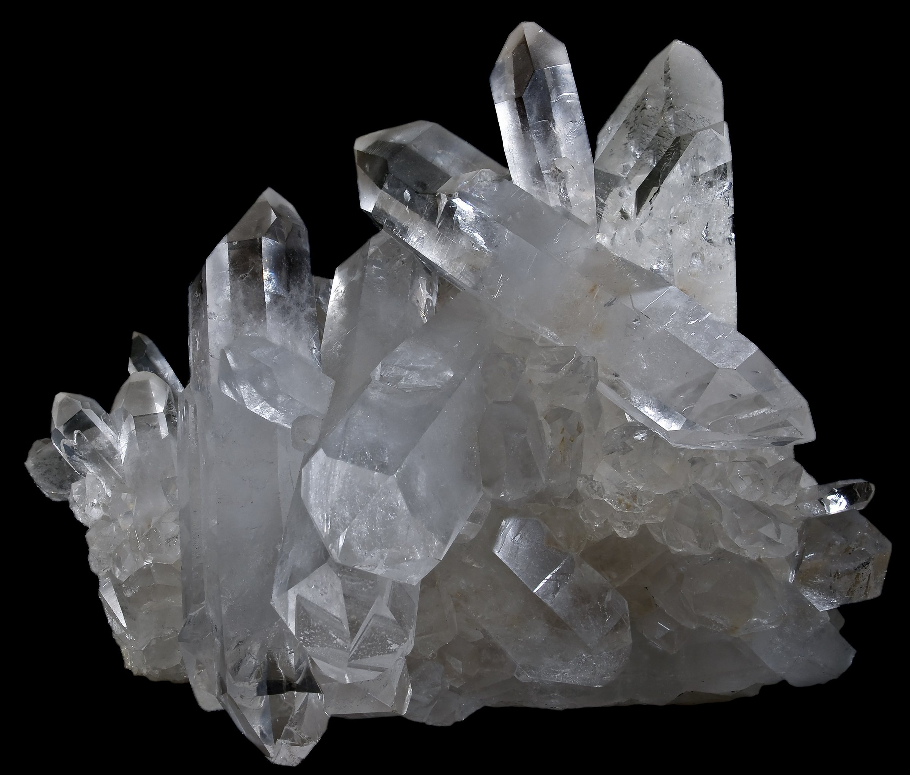
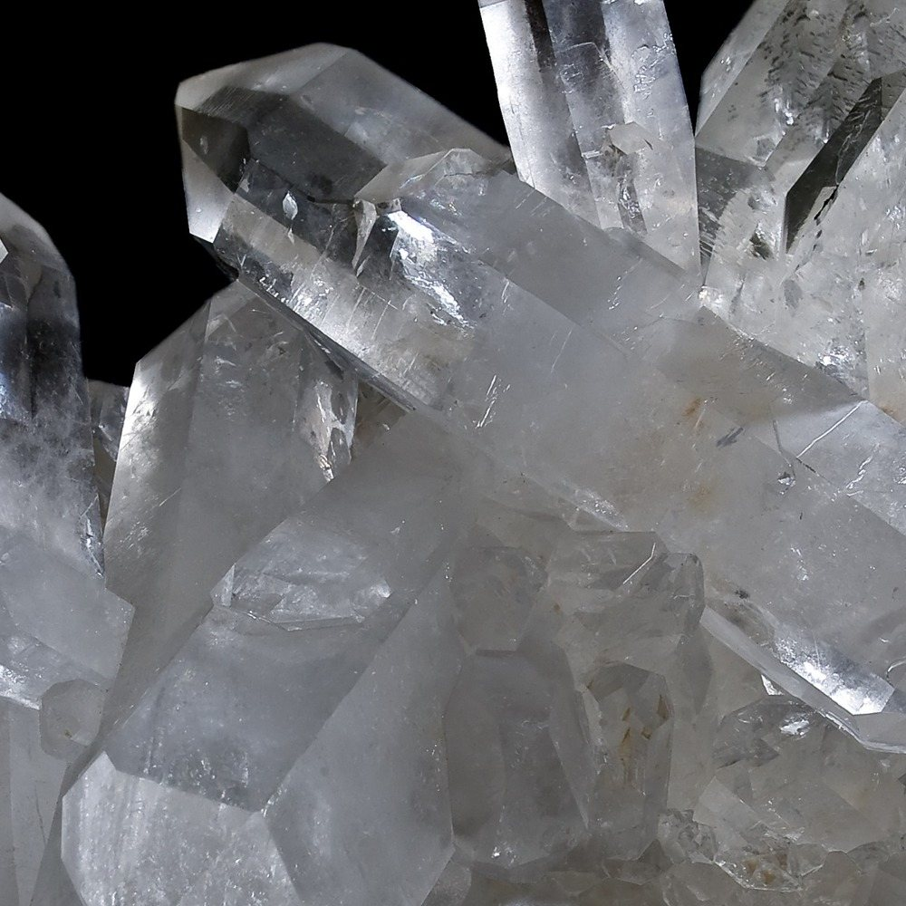
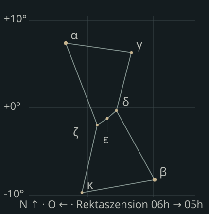

Material · Zeichen · Zyklen
Entdecke die verborgene Sprache des Universums
Tarot · Kristalle · Runen · Mondphasen · Astrologie · Altes Wissen für moderne Suchende. Ein ruhiger Zugang zu Material, Symbolik und Zyklen — ohne Wirkungsversprechen.

Gewachsene Form, gerichtete Reflexe, echte Einschlüsse.
Pfade der Erkenntnis
Sechs Zugänge
Wähle dein Tor zur Weisheit — jede Ansicht ist ein eigenes Werkzeug.

Material / Bildsprache
Ein Stein ist mehr als sein Glanz.
Risse, Trübungen und unregelmäßige Kanten machen das Material lesbar. Licht zeigt den Körper, statt ihn mit einer Aura zu übermalen. Erst aus der aufmerksamen Betrachtung entsteht eine eigene Lesart.
Zum Kristall-KatalogKosmos / Eine zweite Ebene
Ein leiser Bezug zum großen Ganzen.
Wenige Punkte, feine Beziehungen. Diese Tafel ordnet, ohne die Materialwelt zu übertönen: Orion als reduzierte Koordinatenstudie aus sieben Hauptsternen — nicht als aktueller Himmel und nicht als astrologische Vorhersage.
Artikel zu Zyklen und Materie
Schematische Projektion; keine Beobachtungsvorhersage. Daten: Sternliste Orion (Wikimedia, abgerufen 31.10.2026), eigene Vektorzeichnung.
Tarot / Spiegel der Seele
Tarot — Der Spiegel der Seele
78 Karten des Nachtatelier-Decks: 22 Große Arkana und vier Farben mit je 14 Karten. Jede Karte hat eigene Stichwörter, eine Beschreibung ihrer Bildsprache und je eine Deutung für aufrecht und umgekehrt.
Deine Ziehung
Die Legung vergibt keine festen Positionen: Lies die gezogenen Karten als Abfolge von Impulsen.
Symbolische, traditionelle Deutung — ein Angebot zum Nachdenken, keine Vorhersage und kein Heil- oder Wirkversprechen. Deck: „Nachtatelier“, Motive nach gemeinfreien historischen Vorlagen.
Kristalle / Material
Kristalle & Steine
Kraft der Erde. Filter nach Chakra, Farbe, Wirkung.
Mond / Zyklus
Mondphasen
Was gerade am Himmel steht, wann die nächste Hauptphase ist — und was die acht Phasen bedeuten.
Die Mondberechnung ist in diesem Browser fehlgeschlagen. Die übrige Seite funktioniert weiter; bitte lade die Seite neu.
Monddarstellung wird geladen …
Datum wird geladen …
Lade …
Beleuchtung wird geladen …
- Mondalter
- —
- Im Zyklus
- —
- Nächstes Ereignis
- —
—
Berechnet im Browser nach Meeus, Kap. 48–49. Zeiten in Europe/Berlin, Genauigkeit etwa ±1 Minute. Keine Standortdaten nötig.
Die vier Hauptphasen im Verlauf
Ein Zyklus dauert im Mittel 29,53 Tage. Die vier Hauptphasen teilen ihn in Viertel — ihre Abstände schwanken aber um mehrere Stunden, weil die Mondbahn elliptisch ist.
Monatskalender
—
Die acht Phasen verstehen
Die vier Hauptphasen sind exakte Zeitpunkte. Sichel und Gibbous beschreiben die Bögen dazwischen — deshalb kann ein Tag kurz nach dem Viertel schon als zunehmender Mond erscheinen. Die Zahlen sind berechnet; die Deutungssätze darunter sind ausdrücklich als Deutung gekennzeichnet.
Deutung · kulturell & astrologisch — keine Messwerte
Was Menschen in die Phasen gelesen haben
Die Astronomie sagt, wie hell der Mond ist. Was er bedeuten soll, ist eine Überlieferung — hier steht beides getrennt.
Reflexionsideen für die aktuelle Phase
Deutung der aktuellen Phase
—
Woher die Zahlen kommen
Bewusst nicht enthalten: Mondauf- und -untergang (ohne Standort nicht berechenbar), Mondzeichen (keine geprüfte Ephemeride im Projekt) und Finsternisse (eigene Rechnung über Knotenlage). Es werden keine Standort- oder Gesundheitsdaten abgefragt.
Runen / Älteres Futhark
Runen — Das ältere Futhark
24 Runen. Werfe die Runen für Antworten aus der Tiefe der Zeit.
Deine Runen
Alle Runen des älteren Futhark
Wissen / Artikel
Wissen & Artikel
Tiefgehende Artikel zu Esoterik, Spiritualität & alter Weisheit.